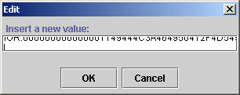
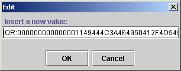
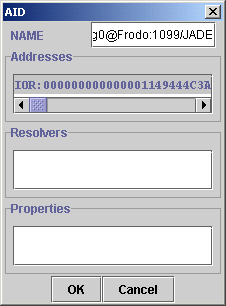
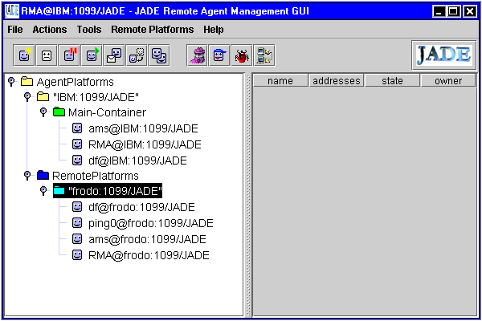

In Tutorial 2 we saw a simple JADE platform consisting of containers which could be scattered among many different hosts with one Main container on a host running the RMI service. All the agents on one platform communicate using the RMI protocol. RMI is the intra communication mechanism internal to a platform.
JADE agents can also communicate among separate platforms, in other words, JADE provides mechanisms for inter platform communication. These mechanisms are CORBA based and use the IIOP protocol rather than RMI. Such an arrangement allows JADE agents to talk to FIPA compliant agents on any platform supporting CORBA and FIPA standards. This is the whole idea of FIPA: to make diverse agent systems interoperable.
Also, there exist other protocols for inter platform communication. One popular method uses the HTTP protocol.
This tutorial shows how to use the basic Sun IIOP for inter platform communication.
In this tutorial you just get the DummyAgent talking to the PingAgent, one on one platform, the other on another platform. You could run two platforms on one machine, provided you use different ports for the RMI servers. But things are clearer and more typical if the platforms run on different hosts.
When you invoke java jade.Boot -gui, you get something like this on the Java console (DOS window):
IOR:000000000000001149444C3A464950412F4D54533A312E3000000000000000010000000000000054000101000000000C3139322E3136382E302E350007CE000000000018AFABCAFF00000002234298670000000800000000000000000000000100000001000000140000000000010020000000000001010000000000
You will also find it stored in a file called MTP-Main-Container.txt in the jade directory.
What is it? Well, it acts as a CORBA address, or end point. This strange value occurs because by default JADE uses Sun's JDK 1.3 CORBA/iiop implementation which is rather primitive. (The JADE team has provided a more sophisticated ORB which allows explicit addressing.)
To send messages between default versions of JADE platforms you need to use this end point as an agent address, which is rather awkward.
Boot a JADE platform on each of two computers in the usual way. For example, on host Frodo
and
on host IBM.
Now, as usual, we want to send a message from a DummyAgent to a PingAgent, this time with the agents residing on separate platforms, not just in separate containers on the same platform. To do this we use the IOR's as the addresses for the agents.
The IIOP IOR (endpoint) of a platform is automatically stored in a file called MTP-Main-Contairner.txt. A sender of a message must know the receivers IOR so somehow, the sender must get a hold of the MTP-Main-Container.txt file of the receiver. One could use ftp. On a LAN with MS Windows you can just copy the file or even just cut and paste its contents.
The platform with the DummyAgent needs to know the IOR of the platform with the PingAgent in order to send it a message. (Of course it knows its own IOR.)
In this tutorial we just use "My Network Places" with the editor NotePad to open the receiver's file and copy the IOR to the Receiver field of the DummyAgent.
| Recall that to add a receiver to the DummyAgent right click on the receivers field and choose add. This brings up the AID window. Enter the full name of the PingAgent, e.g., ping0@Frodo:1099/JADE. Then right click the address field in the AID window and use ctrl-v to paste the IOR into this field. | ||
On MS Windows you type ctrl-v to do the pasting.
Remember to avoid the cr/lf from the end of the IOR, if necessary). You can see from the pictures below that you get a visual clue if you have entered the IOR correctly.
| The IOR with a cr/lf (bad)
(So be careful to avoid the cr/lf when you copy the IOR from your editor) |
 | ||||
| The IOR correctly entered without a CR/LF |  | ||||
The AID window should look something like this:

Do not check the box indicating a local name. Fill in the full,global name (with the @ sign and the RMI platform address.)
Click OK and then send the message to the ping0 agent.
Finally, you are ready to send the same message as before, from the DummyAgent to the PingAgent. Everything should run just like in all the previous tutorial examples. The QUERY-REF informative is sent by the DummyAgent, and the PingAgent sends an INFORM message in reply. Click the "eyeglasses" button to see the content of the reply ("alive").
Note that the message sent by the DummyAgent includes the return address (IOR of the platform on which the DummyAgent is running so you only need to copy one IOR, that of the receiver.
Using the JDK 1.3 CORBA/IIOP ORB is clearly very awkward. It would be well to install the Orbacus ORB add on (see the distribution documentation on doing this) which allows the standard host:port addressing for the endpoints.
Many people use the HTTP MTP add-on for inter platform communication. Tutorial 4 of these notes shows how to do this.
You will notice a menu entry of the RMA agent (the GUI for the platform) called "Remote Platforms". If you click it you see two ways of contacting a remote platform. The easiest is "add platform via AMS AID".
If you click this you get a window which allows you to enter the AMS agent's name and location. For the name you need the global name of the target AMS, for example, ams@frodo:1099/JADE. For the location you need to copy in the IOR of that remote platform.
You should see a new entry in the RMA agent for the remote platform. To view its contents select and right click. The choose "Refresh agent list" and you should see all the agents on the remote platform. It might look like this:
